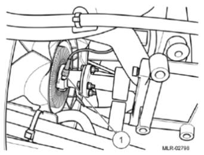
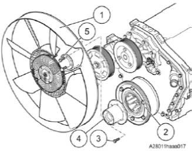
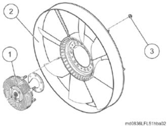

Informações Importantes
Danos aos componentes por conexões parafusadas incorretamente. • Caso parafusadeiras de impacto sejam utilizadas, estas somente podem ser utilizadas com
Falha no funcionamento devido ao assentamento incorreto do acoplamento do ventilador
Remoção
Remover o ventilador do radiador Desligar a conexão elétrica do ventilador do radiador.
 
• Desligar a conexão elétrica (1) do ventilador do radiador.
Remover o ventilador do radiador e o flange intermediário

• Remover os parafusos de fixação (5).
Remover o acoplamento do ventilador do radiador
 • Soltar as porcas de fixação (3). Instalar o ventilador do radiador Instalar o acoplamento do ventilador do
• Inserir o acoplamento (1) no ventilador do radiador (2). Instalar o ventilador do radiador e o flange intermediário
• Posicionar o flange intermediário (4) no amortecedor de vibrações (2).
Ligar a conexão elétrica do ventilador do
• Instalar o braço de apoio.
|
||||